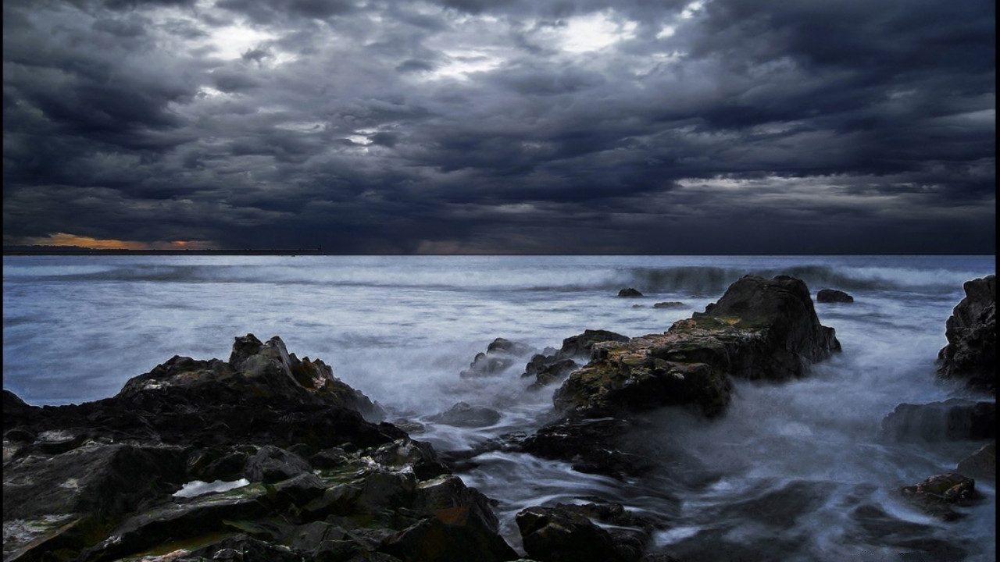

<ion-header>

  <ion-navbar >
    <ion-title>T-Nice</ion-title>
  </ion-navbar>

</ion-header>

<ion-content padding *ngIf="game"  [ngClass]="(game.actionPhase === 2)?'black-background':'card-background-page'" >
  <action-step-visualizer *ngIf="game.actionPhase !== 2" [socket]="socket" [game_name]="game.name"></action-step-visualizer> 
  <div class="action-cards" *ngIf="game.actionPhase === 0">
    <ion-card (click)="navigateToWindEffectGeneratorPage(game)">
      
      <div class="card-title action">Effets météo (vent)</div>
    </ion-card>
  </div>
  <!-- Remove this button when it is possible to play a game -->
  <fun-facts *ngIf="game.actionPhase === 3"></fun-facts>
  <!--<button *ngIf="game.actionPhase === 3" (click)="startActionPhase()" ion-button outline style="width: 100%">Simuler la fin d'un point</button>-->
  <result-screen *ngIf="game.actionPhase === 2" [action]="actionThatWon"></result-screen>
  <action-list *ngIf="game.actionPhase === 1" [game]="game" [socket]="socket"></action-list>
  
</ion-content>
